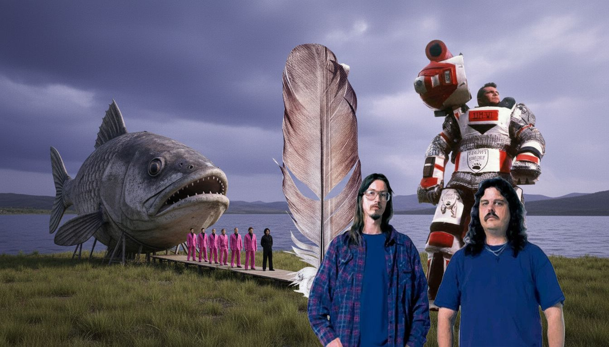

I have been super into documentaries lately and I especially enjoy ones
where there are quirky and/or surreal characters and situations.
I also really admire the work that the director is doing in some of these, such as The Act of Killing to dig deep and challenge boundaries which inspires want to do the same.